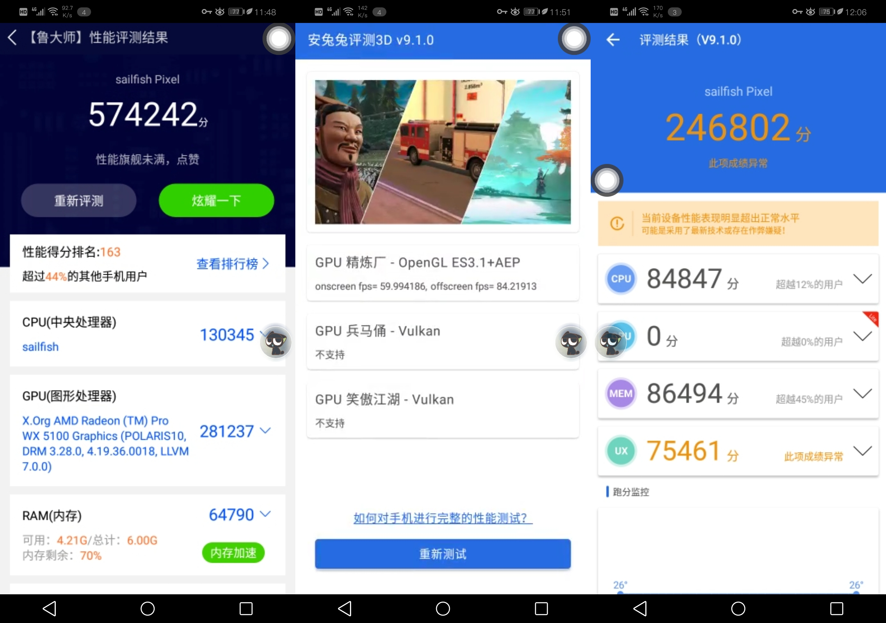
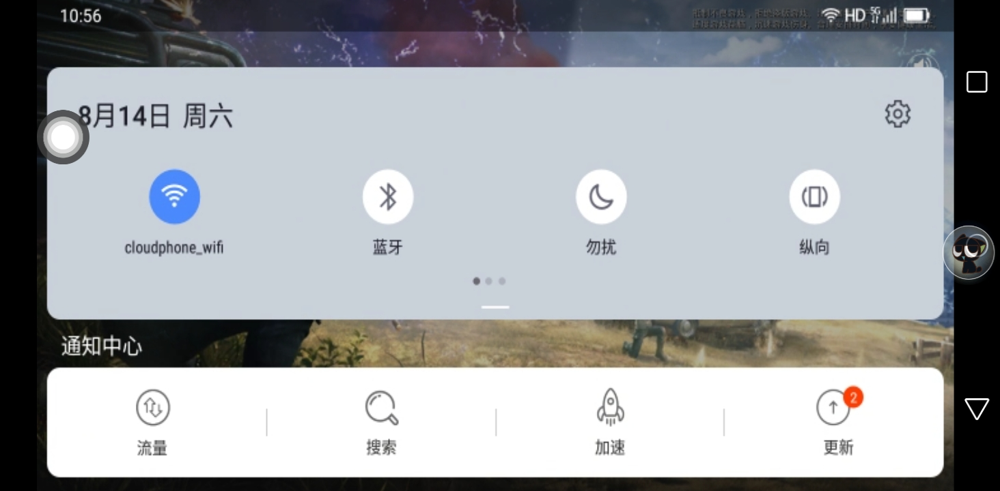

本次体验的版本：1.0.23.210811
每天可领取2小时体验时间。时间从进入云手机时开始，中间不终止计时。计时开始后云手机会一直运行。时间用完后云手机回收，数据清空。
跑分（图一乐系列）
aid64和系统设置页


使用体验很一般，但游戏体验很差，不如和平的云游戏。不过云手机是5g的，所以网速还好。只是波动有点大，500k到50m。内置了mm应用商店，讯飞，和彩云（有一部分是旧版，需更新）
部分网页不能打开（可能是被移动墙了）

软件支持分享屏幕啥的（看介绍是拿来教老人用手机的），算是一大特色了。不过我没去用，未知。